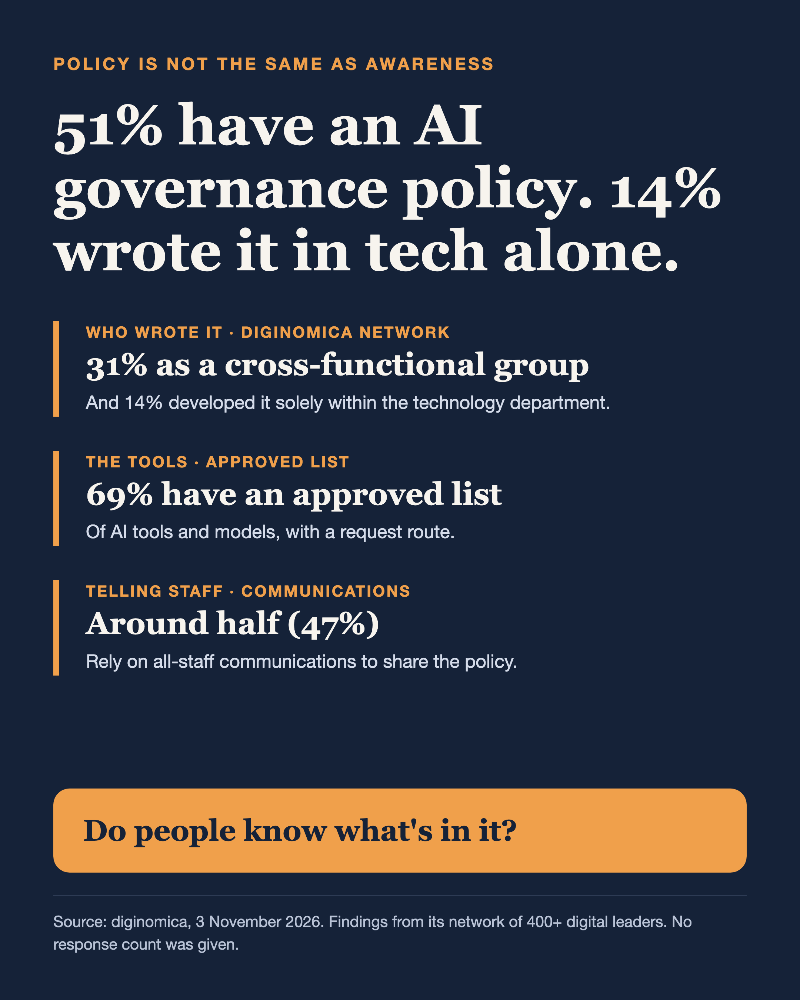

A policy exists, but does anyone know what's in it?
More than half of diginomica's digital leaders have an AI governance policy. Only 14% wrote it within the technology team alone.
diginomica published findings from its network on 3 November. The network brings together 400+ CIOs and senior digital leaders. Just over half (51%) have developed an AI governance policy. 31% developed it as a cross-functional group, and 14% developed it solely within the technology department.
Beyond who writes it: 69% have an approved list of AI tools and models, with a route to request additions. Around half (47%) rely on all-staff communications to tell people about the policy.
The article doesn't say how many members answered, so I'd read this as a snapshot of one community, not a benchmark.
If you're running AI adoption, the gap I'd watch is between having a policy and people knowing what's in it. An all-staff message is the easy way to share one. An approved-tools list only helps if people know it exists and how to ask for something to be added. That sounds like a job for training as much as for policy.
The author, Mark Chillingworth, argues AI governance is no longer just IT's job. I'd add that it isn't just a document either.
